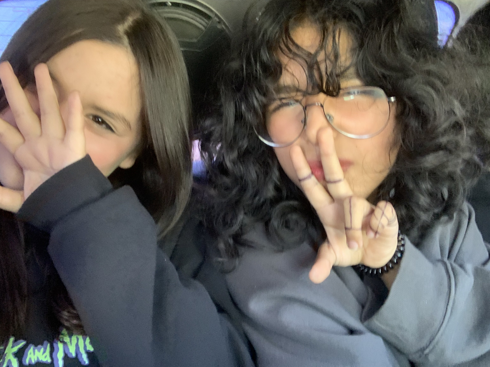
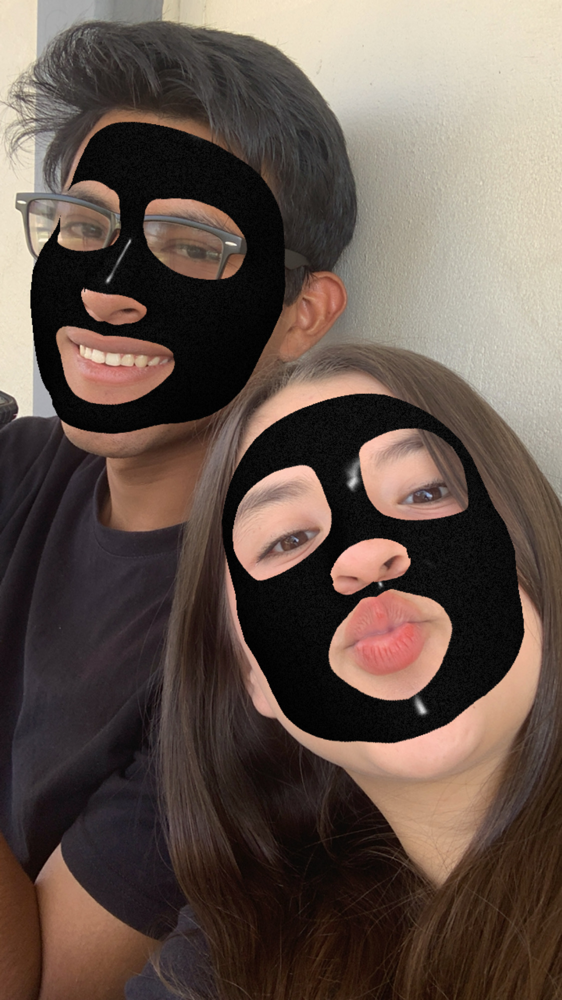
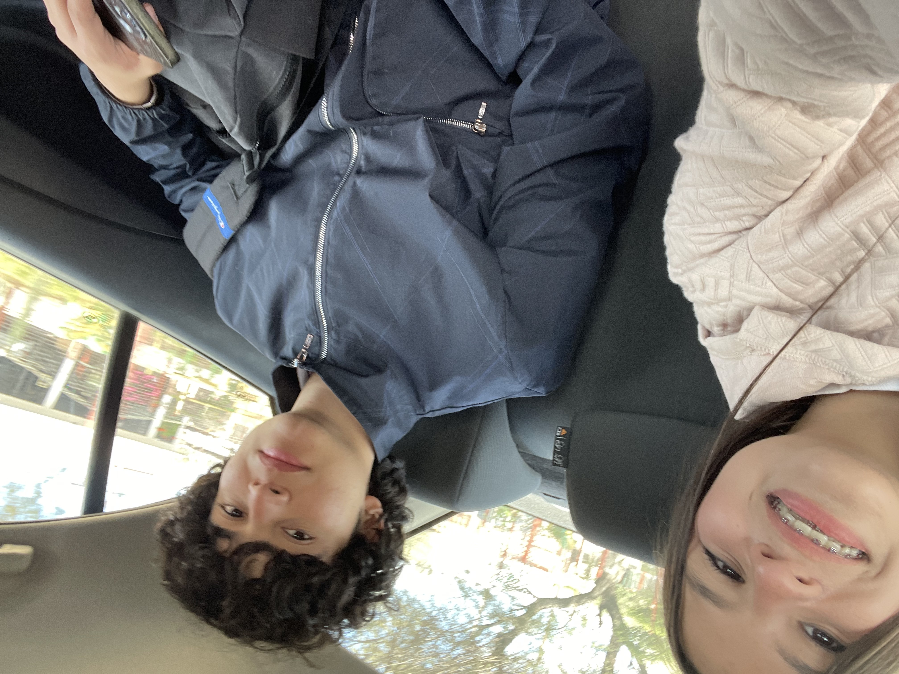

Ella es shirel para mi "mati" o " chaparrita" ella es mi mejor amiga con la que me la paso todoo el tiempo me hace reir y hace que me sienta de animos cuando no tengo ganas de nada aunque ella no lo sepa.. Hace que mis dias en la prepa sean mas divertidos con cada ocurrencia que dice o hace. Yo quiero mucho a esa plebilla

Podria decir que el lazaro es el mejor amigo (hombre) que me he encontrado en mi vida. Lo conozco desde 3er semestre y desde ahi seguimos con nuestra amistad apesar de tener a veces desacuerdos pero cosas pequeñas o problemas con personas que han intentado separnos (mi ex) jaja

El es brayanmyress mi migazo, aunque lo conozco desde hace poco se ha vuelto un muy buen amigo, el es alguien a quien le puedes contar tus problemas y te va a dar un consejo sin juzgarte siempre escuchando tus problemas y estando contigo dando apoyo, se le quiere al cabeza de brocoli
REGRESAR